A.F · Evidências da auditoria
3 de outubro de 2026 · 13 páginas públicas, testes de interação e viewport móvel. Esta galeria preserva as telas capturadas; as conclusões completas estão em AUDITORIA.md.
01 · Início desktop
Identidade consistente; abertura depende de uma promessa ampla e imagem pouco explicativa.
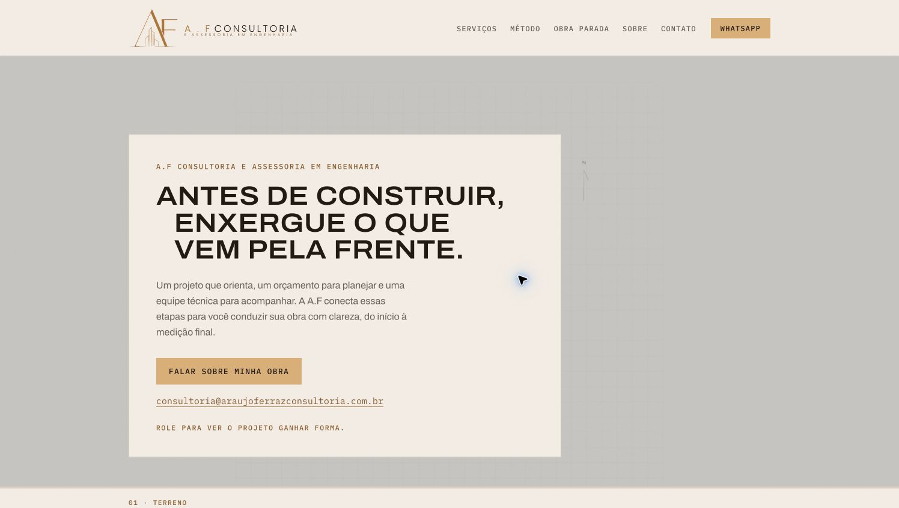
02 · Etapas da pavimentação
Visualização atraente; explicitar se é demonstração, projeto ou obra real.
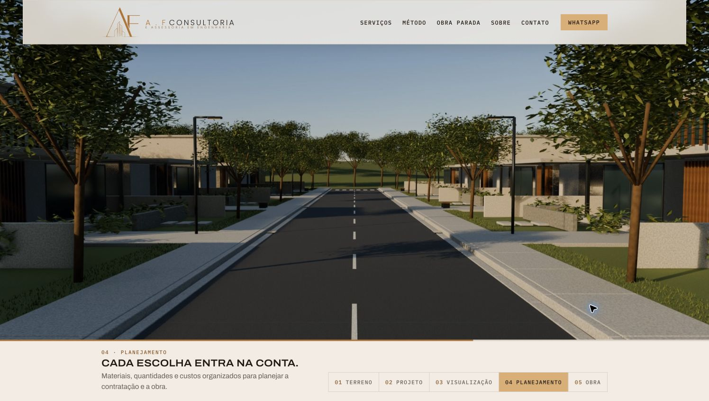
03 · Serviço expandido
Expansão funciona. Lista longa exige esforço para encontrar a contratação adequada.
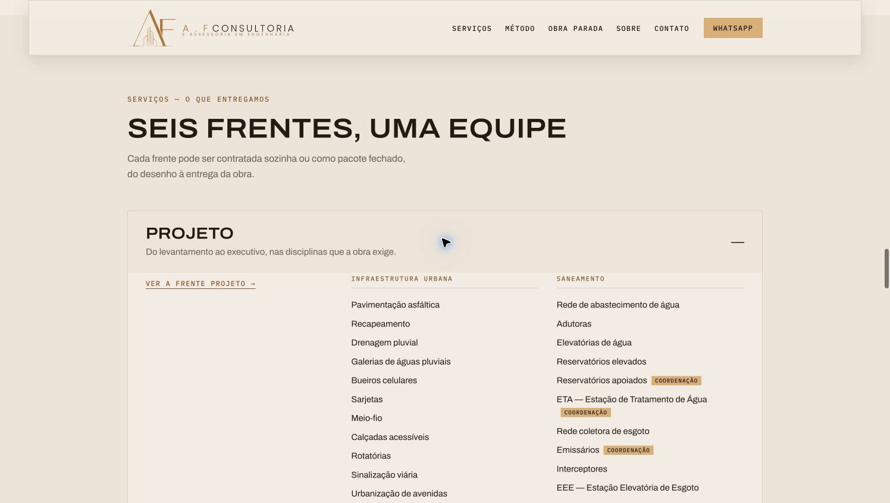
04 · Índice de serviços
Organizado; quantidade de especialidades não substitui prova de experiência.
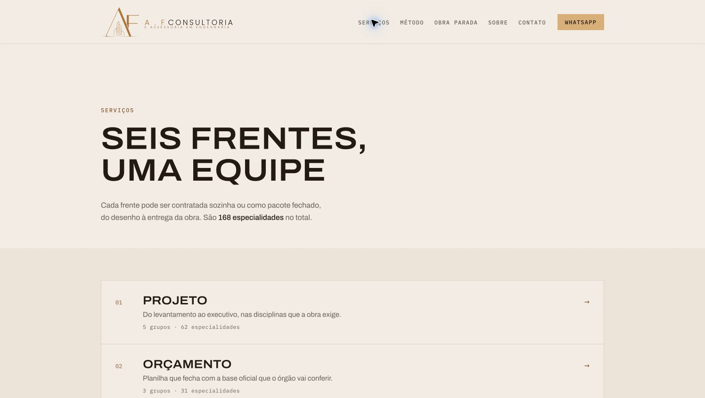
05 · Método
Boa explicação de entradas e saídas. Faltam métodos equivalentes para três frentes.
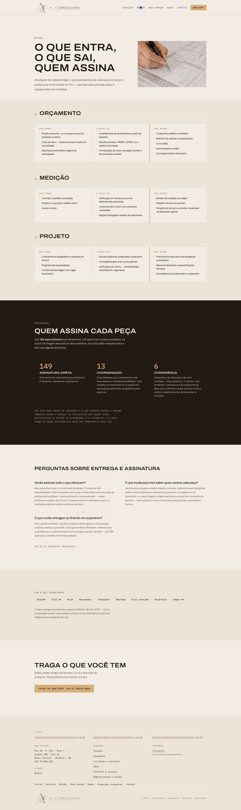
06 · Obra parada
Problema e entregáveis específicos; revisar generalizações e condições de resultado.
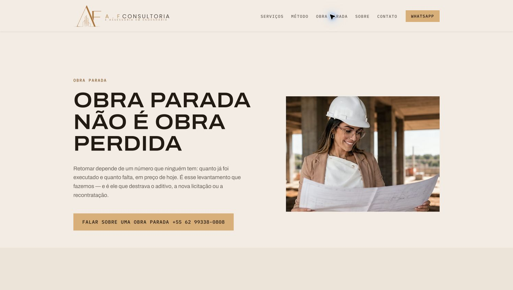
07 · Sobre
Sócios identificados; acrescentar credenciais verificáveis e casos autorizados.
08 · Contato
Caminhos por demanda ajudam. Informar expectativa de resposta e dados mínimos.
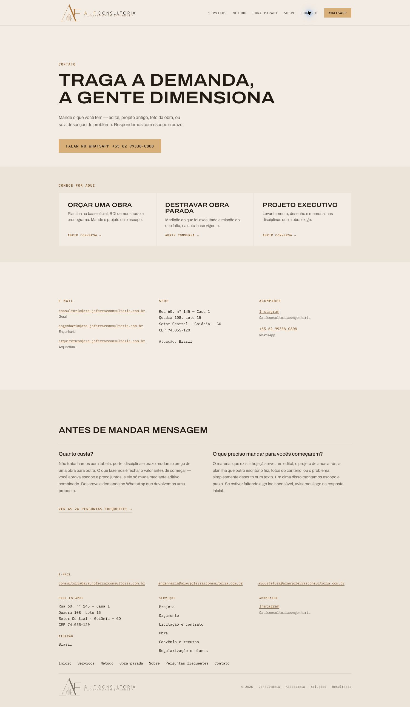
09 · FAQ
Expansão testada; melhorar acesso por categoria e reduzir esforço de leitura.
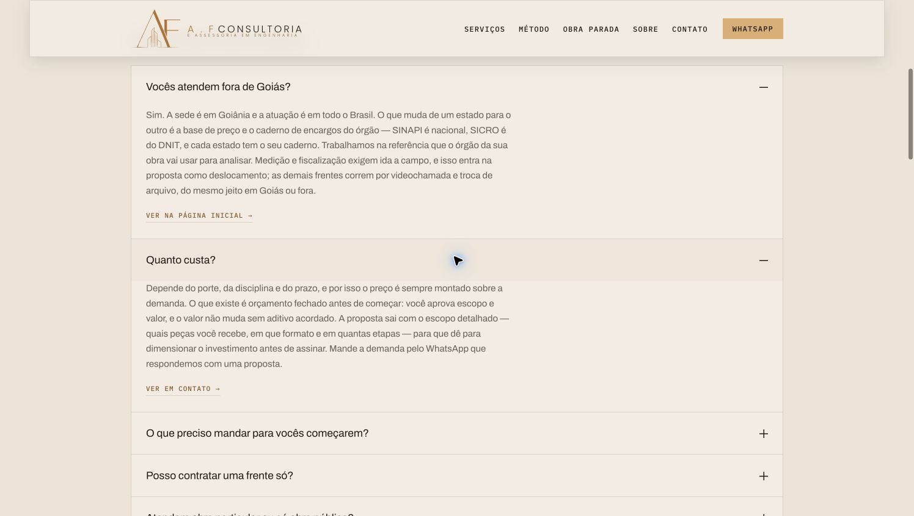
10 · Projeto
Catálogo de capacidades; incluir exemplo de pacote, etapas e documentos.
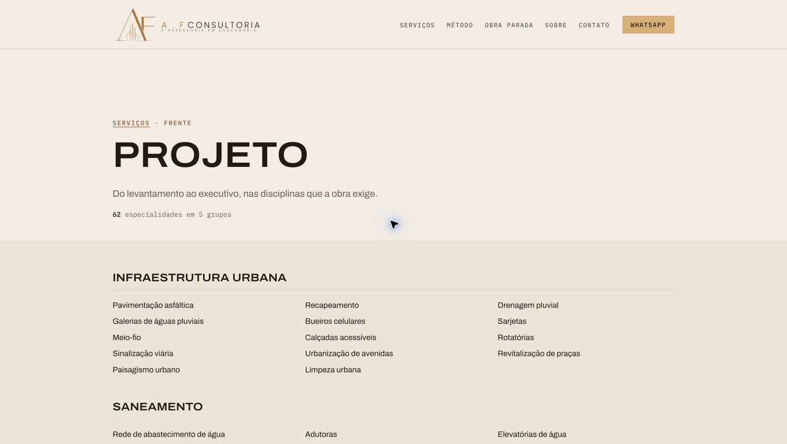
11 · Orçamento
Documentos listados. Padronizar definição de data-base com o Método.
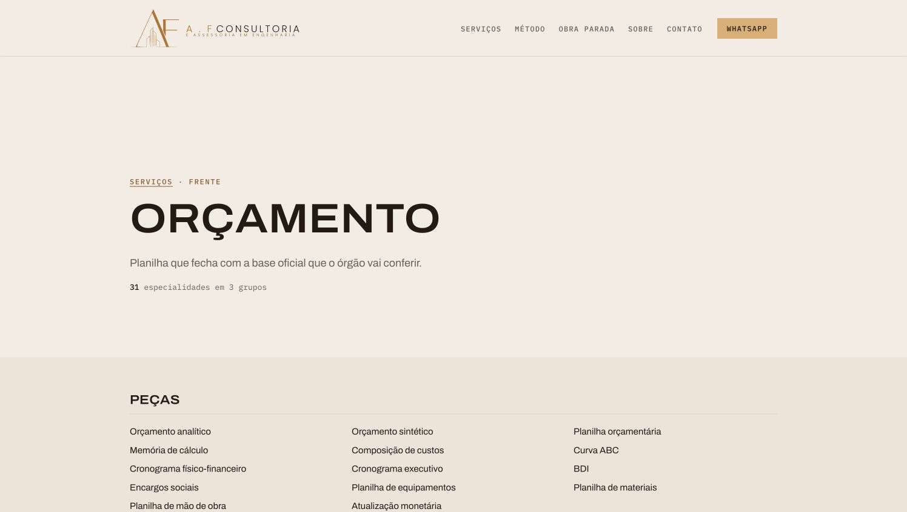
12 · Licitação e contrato
Revisão de textos e exemplos concretos aumentariam clareza do escopo.
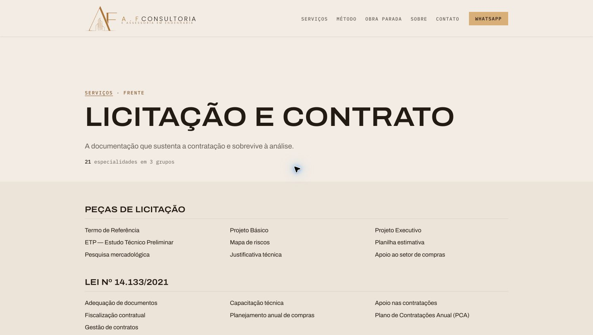
13 · Obra
Erro confirmado: “1 grupos”. Substituir por “1 grupo”.
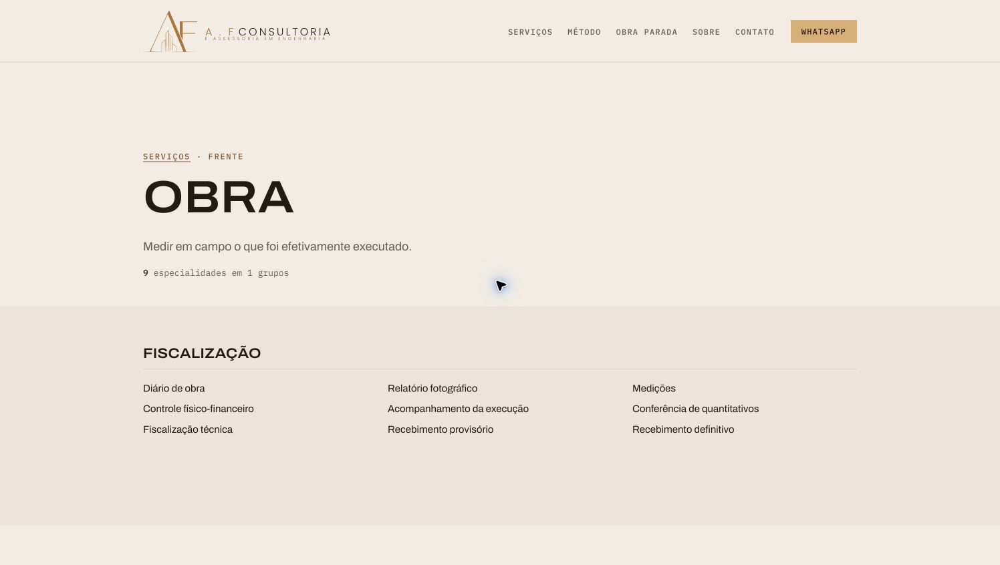
14 · Convênio e recurso
Estrutura clara; generalizações sobre reprovação exigem revisão técnica.
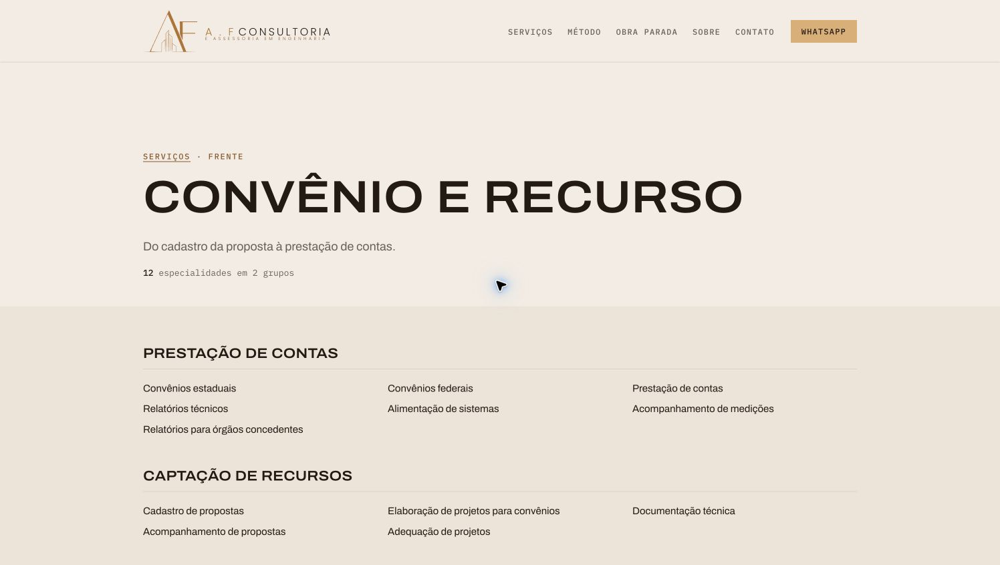
15 · Regularização e planos
Atribuições e afirmações sobre obrigações precisam de validação pelos responsáveis.
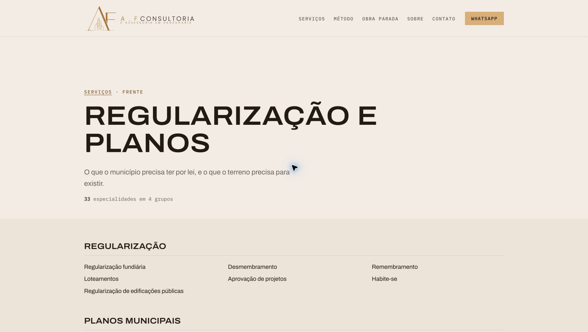
16 · Início móvel
Captura após estabilização. Grande área sem conteúdo antes do vídeo.
17 · Etapas móveis
Cabeçalho ocupa muito espaço e botões exibem apenas números.
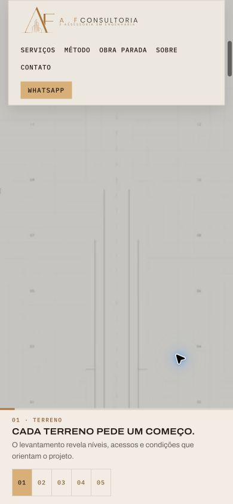
18 · Seleção móvel durante transição
Não houve atualização imediata. Estado transitório; não prova botão quebrado.
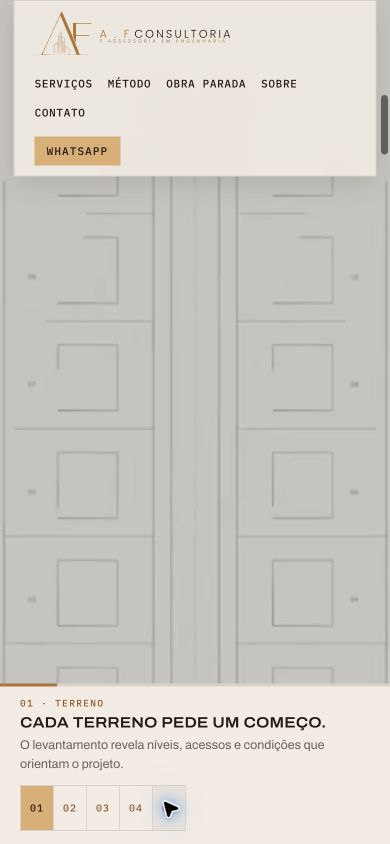
19 · Contato móvel
CTA legível e cartões empilhados; cabeçalho pode ser mais compacto.
20 · Etapa final confirmada
Seleção concluiu na etapa 05; texto e vídeo atualizaram após a transição.
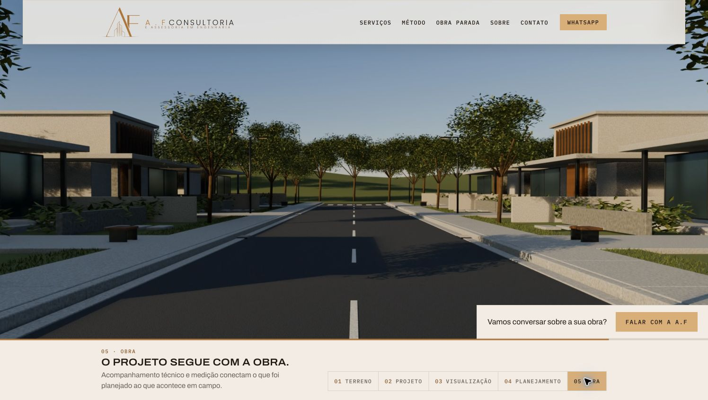